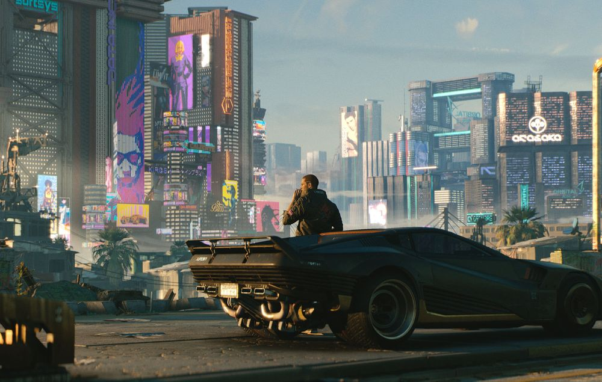

CD Projekt Red developed and released Cyberpunk 2077, an action role-playing computer game. Night City,
an open world set in the Cyberpunk milieu, serves as the setting for the storey. Players adopt the first-person
perspective of V, a configurable mercenary with hacking and mechanical talents as well as melee and ranged combat options.
A team of roughly 500 individuals worked on the game utilising the REDengine 4, which is more than the number of
employees that worked on the studio's previous game, The Witcher 3: Wild Hunt (2015). CD Projekt established a new
division in Wrocaw, Poland, and collaborated on the project alongside Digital Scapes, Nvidia, QLOC, and Jali Research.
Mike Pondsmith, the founder of cyberpunk, served as a consultant, and Keanu Reeves stars in the film. Marcin Przybyowicz
headed the original score, which included contributions from a number of licenced artists.

After years of anticipation, CD Projekt launched Cyberpunk 2077 for PlayStation 4, Stadia, Windows, and Xbox One on
December 10, 2020, with PlayStation 5 and Xbox Series X/S versions set to follow in the first quarter of 2022. It got
plaudits from reviews for its narrative, setting, and graphics, however parts of its gameplay components drew mixed
reactions, and its themes and treatment of transgender people received some criticism.
Achievements
In the year 2018, in Game Critics Awards, the game won Special Commendation for Graphics and
Innovation. Same year in 2018 Golden Joystick Awards, it was awarded the Most Wanted Game. It
was also nominated as the Most Anticipated Game in the Gamer's Choice Awards.
In the year 2019, the game again won the title of Special Commendation for Graphics and Most
Wanted Game in Game Critics Awards and 2019 Golden Joystick Awards respectively.
In the year 2020, in the 18th Visual Effects Society Awards, game won the title of Outstanding
Animated Character in a Commercial (Dex). In the same year, in Gamescom Award 2020 it was
many titles which are as follows: Best PC Game, Best Role-Playing Game, Best of Gamescom,
Gamescom “Most Wanted” Consumer Award as well as the Best Sony Playstation Game
In the year 2021, the game was nominated for the following titles:
1) Outstanding Created Environment in an Episode, Commercial, or Real-Time Project
2) Outstanding Visual Effects in a Real-Time Project
3) Artistic Achievement
4) Narrative
5) Performer in a Leading Role ( Cherami Leigh )
6) Performer in a Supporting Role ( Carla Tassara )
7) Best Score and Music
8) Best Role Playing Game